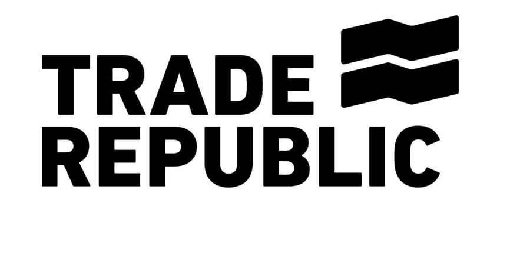

Antes de abrir cuenta, verifica:
Yo personalmente he probado Trade Republic y MyInvestor; ambas cumplen lo esencial y son intuitivas para empezar. Permiten invertir desde importes pequeños.

Empezar con Trade RepublicLas recomiendo mucho. Si te interesa y descargas la app desde esos enlaces, es una forma de apoyar la web.
Empieza con pequeñas cantidades, lee sobre ETFs y diversificación, haz aportaciones periódicas y evita decisiones impulsivas por noticias de corto plazo.
Un gestor externo cobra comisiones por encargarse de la gestión del dinero, que suelen situarse aproximadamente entre el 1 % y el 2 % anual. Cuando se dispone de un capital elevado, puede tener sentido acudir a un asesor profesional que oriente en la toma de decisiones. No obstante, es fundamental vigilar muy bien las comisiones, ya que a largo plazo pueden reducir de forma significativa el rendimiento obtenido.
En algunos casos, pagar por asesoramiento es razonable, especialmente cuando los conceptos financieros resultan difíciles de asimilar o cuando cuesta dar el primer paso. Aun así, es importante que, como mínimo, sepas en qué estás invirtiendo y por qué, incluso aunque delegues la gestión.
Como recomendación práctica, es aconsejable empezar con cantidades pequeñas y aprender gestionando una parte del dinero por uno mismo. Con el tiempo, y a medida que se adquiere más experiencia, se puede valorar si compensa delegar la gestión. En ese caso, conviene hacerlo con conocimiento y control, especialmente en lo referente a las comisiones.
En mi experiencia personal, preferí comenzar invirtiendo poco dinero, asumiendo que probablemente no ganaría ni perdería mucho, pero con el objetivo principal de aprender. A medida que fui entendiendo mejor cómo funciona la inversión, fui aumentando progresivamente la cantidad invertida. Del mismo modo, si aun entendiéndolo prefieres que un profesional gestione tu dinero, es una opción totalmente válida y comprensible, siempre teniendo claro que las comisiones pueden ser elevadas y que, a largo plazo, su impacto es importante.
Mi camino fue simple:
Tú puedes hacer lo mismo. No necesitas ser experto para empezar. Solo curiosidad y disposición a aprender.